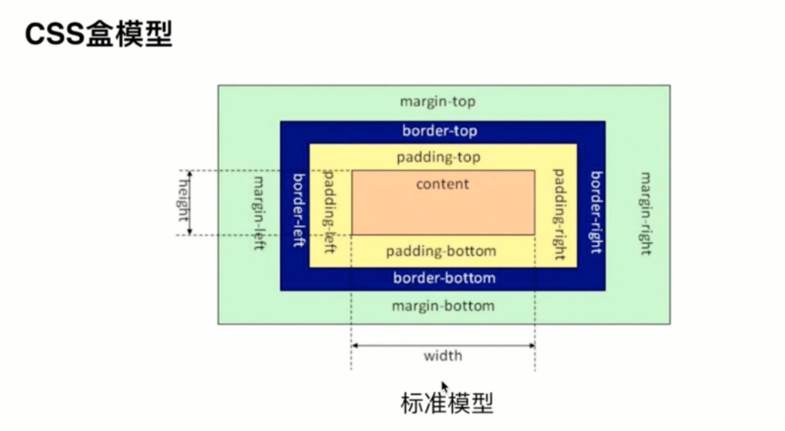
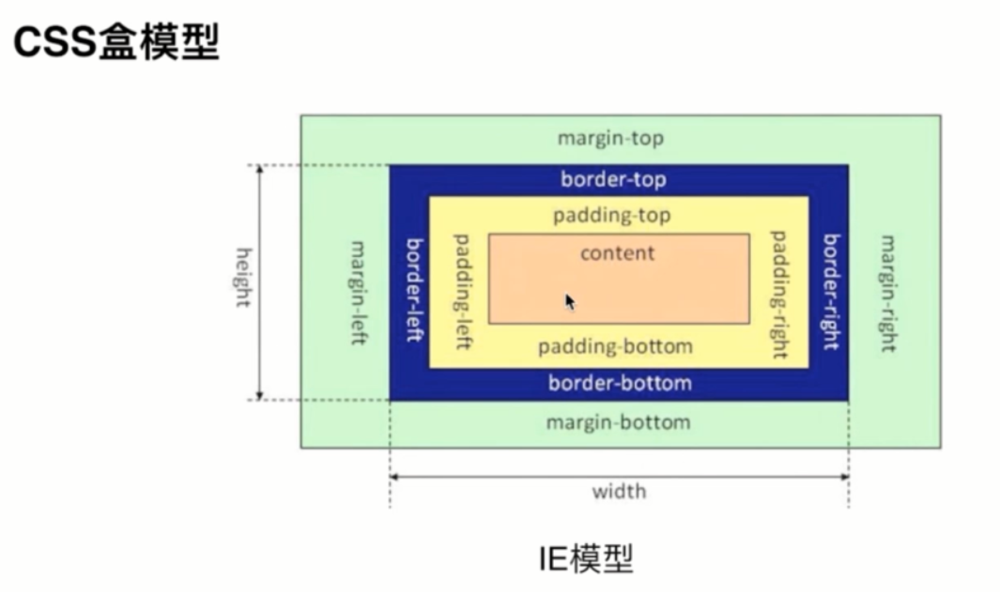

1. 举例
2. 将不会的变成会的
3. 侃侃而谈 HTML 押题
1.（必考）你是如何理解 HTML 语义化的？
段落用p,边栏用aside,主要内容用main,header,footer
2. meta viewport 是做什么用的，怎么写？
控制页面在移动端不要缩小显示
一开始所有页面都是给PC准备的，乔布斯推出iPone3GS,页面是不适应手机屏幕的，所以乔布斯的工程师想了一个办法，默认把所有的手机模拟成980px，页面缩小。后来，智能手机普及，这个功能在部分网站不需要了，所以我们就用meta:vp让手机页面不要缩小
3. canvas 元素是干什么的？
1. （必考）说说盒模型。
 
2. css reset 和 normalize.css 有什么区别？
reset重置，之前所有的样式我不要，抛弃默认样式
normalize让所有浏览器都跟标准默认样式一致
3. （必考）如何居中？
4. 选择器优先级如何确定？
5. BFC 是什么？
6. 如何清除浮动？
1. JS 有哪些数据类型？
2.（必考）Promise 怎么使用？
3.（必考） AJAX 手写一下？
4.（必考）闭包是什么？
5.（必考）这段代码里的 this 是什么？
6.（必考）什么是立即执行函数
7. async/await 语法了解吗？
0. 如何实现深拷贝？ 0. 如何实现数组去重？ 0. 如何用正则实现 string.trim() ？ 0. JS 原型是什么？ 0. ES 6 中的 class 了解吗？ 0. JS 如何实现继承？ 0. == 相关题目直接反着答（放弃） DOM 押题 1. DOM事件模型是什么？ 2. 移动端的触摸事件了解吗？ 3. 事件委托是什么？有什么好处？ HTTP 押题 1. HTTP 状态码知道哪些？ 2. 301 和 302 的区别是什么？ 3. HTTP 缓存怎么做？ 4. Cache-Control和 Etag 的区别是什么？ 5. Cookie 是什么？Session 是什么？ 6. LocalStorage 和 Cookie 的区别是什